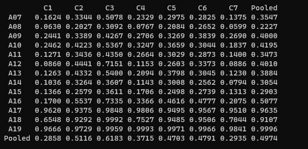

RuHuman High-Level Progress Sheet
1. Experimenting with Audio Voice Cloners (10/23-11/16)
Text: "Welcome aboard my journey on exploring as many U.S. National Parks as I can!"
2. Wrote Download Scripts for Obtaining various Audio Detectors,Cloners,& Datasets using gdown, curl, unzip binaries & Donwloaded to Workstation(11/16-11/23)
3. Experimenting the Baseline Systems of ASVSpoof (11/16-12/6)
Computation of CM Scores, EER Scores, and the t-DCF for the ASVSpoof 2019 Dataset with LFCC-GMM & CQCC-GMM Baselines
Unfourtanetly, NESL's submission for ASVSpoof2019 has a Working Dataset Structure is vastly different to the public release, so couldn't experiment much with their submission.

4. Finished working on UI Front-End of RuHuman (12/1-12/12) with Deployed Pretrained Detector Model of Tortoise TTS